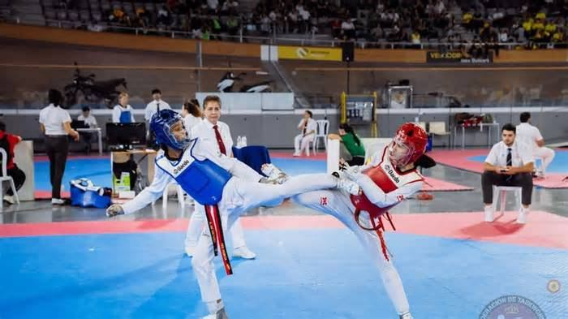

Awa Inés Ortuño, recibida por el Ayuntamiento de Murcia tras proclamarse campeona de España de taekwondo

La murciana es parte del equipo nacional cadete y ha sido convocada para disputar el Campeonato de Europa de su categoría este fin de semana en Bucarest | Cadena SER ...
La murciana es parte del equipo nacional cadete y ha sido convocada para disputar el Campeonato de Europa de su categoría este fin de semana en Bucarest | Cadena SER ...
Noticia publicada por Cadena SER. Consulta el artículo original en Cadena SER para más información.